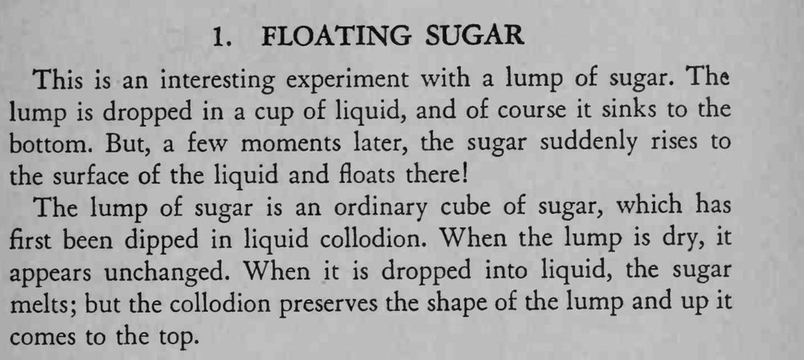

方糖丢进水杯先沉到底，片刻之后却自己浮上水面，像被水推回来一样。
火棉胶要涂满整个糖块，晾干后再用，壳一破就浮不起来。

This is an interesting experiment with a lump of sugar. The lump is dropped in a cup of liquid, and of course it sinks to the bottom. But, a few moments later, the sugar suddenly rises to the surface of the liquid and floats there! The lump of sugar is an ordinary cube of sugar, which has first been dipped in liquid collodion. When the lump is dry, it appears unchanged. When it is dropped into liquid, the sugar melts; but the collodion preserves the shape of the lump and up it comes to the top.